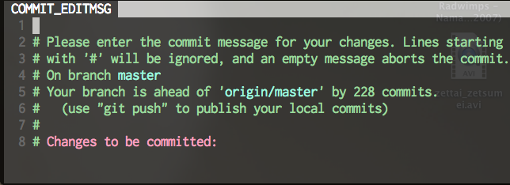
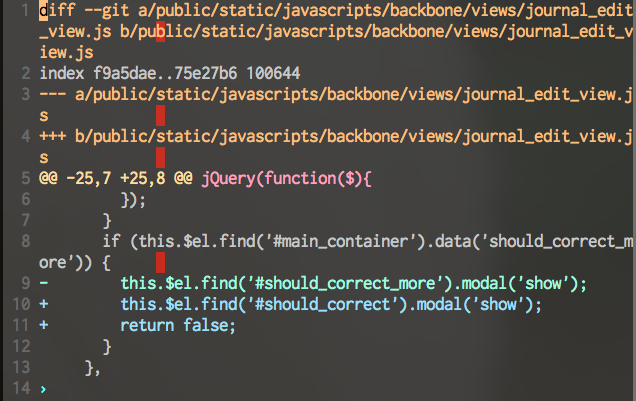
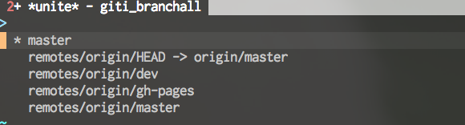
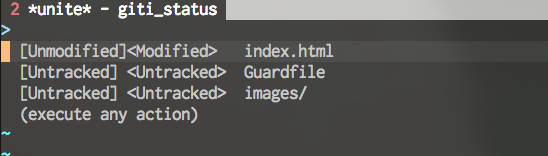
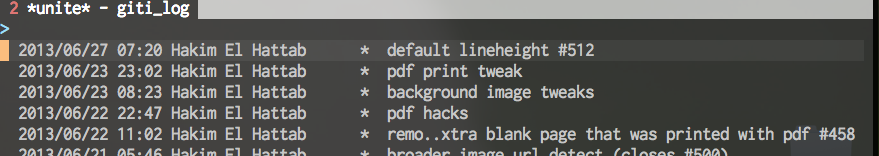

No Vim No Life #1
Created by Taichouchou2 / @alpaca_taichou
隊長 ≒ VIM

- 石井浩之 ニックネームは 隊長
- 立命館大学 経営学部 3回生 シナリオプランニングゼミ
- メイン言語 Ruby, JS/Coffee, VimScript
- .vimrcの戦闘力は3334行
- vim使っているrubyistで、これ入れていないのはヤバいプラグインまとめ 16個の人
- Lang8で足立君やおっさんと一緒に働いています。
NeoComplete.vim
最強VIM補完プラグイン

NeoCompleteって？
- 日本人vimmerのほとんどが使っているneocomplcache.vimの後継
- 内部がluaで動いていて、かなり高速
- 古いオプションを廃止 + Vim本体にパッチを当てている。まさに新世代
- NeoSnippetや、RSenseなど他の補完プラグインと連携が可能
インストール
- luaのインストール
- vimの安定板v969をインストール
- 過去のオプションからの変更
VIM + GIT
全てをvimで完結せよ
使用プラグイン
- tpope/vim-fugitive
- Shougo/git-vim
- kmnk/vim-unite-giti
- 設定はコチラ
vim-fugitive, git-vim
vim + gitの先駆け。シンプルなプラグイン
:GitAdd
指定(編集中)ファイルをgit addする
:Gcommit
git commitを立ち上げる

:Gblame
git blameを立ち上げる

:GitDiff
指定コミットからの差分を取得する

unite-giti
他のvimmerと差が付く最強Plugin
紹介するコマンド
- :Unite giti/branch_all
- :Unite giti/status
- :Unite giti/log
ひとつずつデモしていきます。
:Unite giti/branch_all

- branchの切り換え、生成を行えます
- uniteの基本は、選択 -> アクション
:Unite giti/status

- git add, reset, rebase, checkout...色々を行える
:Unite giti/log

- Logの閲覧/検索
- Diff, checkoutなど
:q<CR>
Themes
Reveal.js comes with a few themes built in:
Sky -
Beige -
Simple -
Serif -
Night -
Default
* Theme demos are loaded after the presentation which leads to flicker. In production you should load your theme in the <head> using a <link>.
Global State
Set data-state="something" on a slide and "something"
will be added as a class to the document element when the slide is open. This lets you
apply broader style changes, like switching the background.
Custom Events
Additionally custom events can be triggered on a per slide basis by binding to the data-state name.
Reveal.addEventListener( 'customevent', function() {
console.log( '"customevent" has fired' );
} );
Slide Backgrounds
Set data-background="#007777" on a slide to change the full page background to the given color. All CSS color formats are supported.
Image Backgrounds
<section data-background="image.png">Repeated Image Backgrounds
<section data-background="image.png" data-background-repeat="repeat" data-background-size="100px">Background Transitions
Pass reveal.js the backgroundTransition: 'slide' config argument to make backgrounds slide rather than fade.
Background Transition Override
You can override background transitions per slide by using data-background-transition="slide".